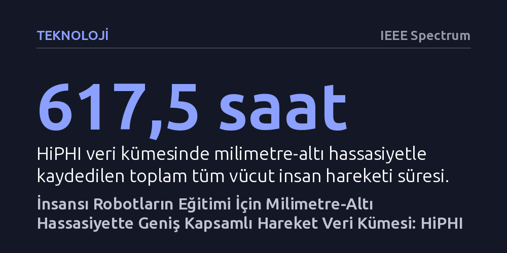

TEKNOLOJI · IEEE Spectrum · 2026-10-07
HiPHI, insansı robotların eğitimindeki veri açığını kapatmak için milimetre-altı hassasiyetle kaydedilmiş 617,5 saatlik tüm vücut hareket yakalama veri kümesini tanıtıyor. Veri kümesi üzerinde pekiştirmeli öğrenmeyle eğitilen modeller, fiziksel Unitree G1 insansı robotuna başarıyla aktarılabiliyor.
İnsansı robotların gerçek dünyada dengede kalıp nesneleri yönlendirebilmesi için internet videolarının yetersiz kaldığını, milimetre-altı hassasiyetteki fiziksel etkileşim verilerinin simülasyondan gerçeğe geçişte vazgeçilmez olduğunu gösteriyor.

İnsansı robotların fiziksel dünyada insan gibi dengede durması, yürümesi ve nesneleri taşıyıp yönlendirmesi, gömülü yapay zeka (embodied AI) alanının en kritik hedeflerinden biridir. Ancak bu sistemleri eğitmek için başvurulan geleneksel veri kaynakları ciddi kısıtlarla karşı karşıyadır. İnternetteki devasa video arşivleri geniş bir davranış çeşitliliği sunsa da nesnelerin ve eklemlerin hassas fiziksel durumlarını, hızlarını veya temas kuvvetlerini barındırmaz.
Öte yandan laboratuvar ortamında toplanan klasik hareket yakalama verileri yüksek hassasiyet sağlasa da çoğunlukla dar bir hareket kümesiyle sınırlı kalmaktadır. İnsansı robotların karmaşık ve öngörülemez gündelik görevleri öğrenebilmesi, hem laboratuvar hassasiyetinde fiziksel durumu kaydeden hem de geniş bir eylem yelpazesini kapsayan yeni bir veri altyapısını zorunlu kılmaktadır.
Bu veri açığını kapatmak amacıyla geliştirilen HiPHI, optik hareket yakalama sistemleriyle milimetre-altı hassasiyette toplanmış 617,5 saatlik tüm vücut insan hareketi verisi sunmaktadır. Veri kümesinin en ayırt edici yönlerinden biri, insan eylemlerini rastgele kaydetmek yerine dilbilimsel bir eylem çerçevesi olan FrameNet rehberliğinde yapılandırmış olmasıdır. Bu sayede tüm vücut hareketlerinin geniş bir yelpazeyi sistematik olarak kapsaması sağlanmıştır.
Veri kümesinin 245,7 saatlik bölümü doğrudan insan-nesne etkileşimlerine ayrılmıştır. Bu kayıtlarda yalnızca insan bedeninin hareketleri değil; itme, çekme ve taşıma gibi görevlerde nesnelerin eşzamanlı yörüngeleri ve üç boyutlu yüzey ağları (mesh) da hassasiyetle saklanmaktadır. Böylece robotlar yalnızca bedensel hareketleri taklit etmekle kalmayıp, nesnelerle kurdukları fiziksel teması da öğrenebilmektedir.
HiPHI yalnızca ham bir veri tabanı sunmakla kalmayıp hareket çeşitliliğini ve etkileşim kalitesini ölçen kapsamlı bir test paketi de getirmektedir. Veri kümesi üzerinde pekiştirmeli öğrenme ile eğitilen hareket politikaları, eğitim verisinin hacmi arttıkça robotun hareket ve etkileşim performansının belirgin biçimde ölçeklendiğini ortaya koymaktadır.
Çalışmanın en somut başarısı, simülasyon ortamında eğitilen bu politikaların simülasyondan gerçeğe transfer (sim-to-real transfer) yöntemiyle doğrudan fiziksel bir Unitree G1 insansı robotuna aktarılmasıdır. Milimetre-altı hassasiyetteki etkileşim verileri sayesinde robot, gerçek dünyada denge kaybı yaşamadan karmaşık nesne etkileşimlerini kararlı biçimde yürütebilmiştir.
HiPHI gibi yüksek hassasiyetli veri kümeleri, yapay zekanın salt dijital metin veya 2D video ortamından çıkarak fiziksel gerçeklikle doğrudan etkileşime girdiği fiziksel yapay zeka çağının temel taşını oluşturmaktadır. Verinin dilbilimsel sınıflarla organize edilmesi ve nesne ağlarıyla desteklenmesi, robot öğreniminde internet verisinin yüzeyselliğini aşan yeni bir standart tanımlamaktadır.
Bununla birlikte, optik hareket yakalama sistemleriyle laboratuvarlarda yüzlerce saatlik veri toplamanın getirdiği yüksek donanım ve kurulum maliyetleri göz ardı edilemez. Ayrıca gerçek dünyadaki nesneler laboratuvardaki gibi net geometrilere sahip olmadığından, bu politikaların endüstriyel veya evsel alanlardaki beklenmedik yüzey ve ağırlık değişimlerine ne ölçüde dayanıklı kalacağı bağımsız testlerle doğrulanmayı beklemektedir.